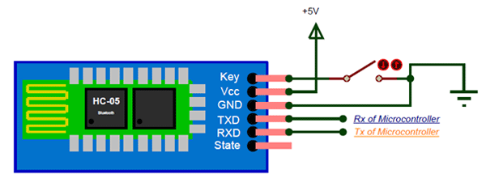

| Pin Number | Pin Name | Description |
|---|---|---|
| 1 | Enable / key | This pin is used to toggle between Data Mode (set low) and AT command mode (set high). By default it is in Data mode |
| 2 | Vcc | Powers the module. Connect to +5V Supply voltage |
| 3 | Ground | Ground pin of module, connect to system ground. |
| 4 | TX - Transmitter | Transmits Serial Data. Everything received via Bluetooth will be given out by this pin as serial data. |
| 5 | TR - Receiver | Receive Serial Data. Every serial data given to this pin will be broadcasted via Bluetooth. |
| 6 | State | The state pin is connected to on board LED, it can be used as a feedback to check if Bluetooth is working properly. |
| 7 | LED |
Indicates the status of Module
|
| 8 | Button | Used to control the Key/Enable pin to toggle between Data and command Mode |
HC-05 Default Settings
- Default Bluetooth Name: “HC-05”
- Default Password: 1234 or 0000
- Default Communication: Slave
- Default Mode: Data Mode
- Data Mode Baud Rate: 9600, 8, N, 1
- Command Mode Baud Rate: 38400, 8, N, 1
- Default firmware: LINVOR
HC-05 Technical Specifications
- Serial Bluetooth module for Arduino and other microcontrollers
- Operating Voltage: 4V to 6V (Typically +5V)
- Operating Current: 30mA
- Range: < 100m Works with Serial communication (USART) and TTL compatible Follows IEEE 802.15.1 standardized
- protocol Uses Frequency-Hopping Spread spectrum (FHSS) Can operate in Master, Slave or Master/Slave mode Can be
- easily interfaced with Laptop or Mobile phones with Bluetooth Supported baud rate:
- 9600,19200,38400,57600,115200,230400,460800.
Where to use HC-05 Bluetooth module
The HC-05 is a popular module which can add two-way (full-duplex) wireless functionality to your projects. You can use this module to communicate between two microcontrollers like Arduino or communicate with any device with Bluetooth functionality like a Phone or Laptop. There are many android applications that are already available which makes this process a lot easier. The module communicates with the help of USART at 9600 baud rate hence it is easy to interface with any microcontroller that supports USART. We can also configure the default values of the module by using the command mode. So if you looking for a Wireless module that could transfer data from your computer or mobile phone to microcontroller or vice versa then this module might be the right choice for you. However do not expect this module to transfer multimedia like photos or songs; you might have to look into the CSR8645 module for that.
How to Use the HC-05 Bluetooth module
The HC-05 has two operating modes, one is the Data mode in which it can send and receive data from other Bluetooth devices and the other is the AT Command mode where the default device settings can be changed. We can operate the device in either of these two modes by using the key pin as explained in the pin description. It is very easy to pair the HC-05 module with microcontrollers because it operates using the Serial Port Protocol (SPP). Simply power the module with +5V and connect the Rx pin of the module to the Tx of MCU and Tx pin of module to Rx of MCU as shown in the figure below
During power up the key pin can be grounded to enter into Command mode, if left free it will by default enter into the data mode. As soon as the module is powered you should be able to discover the Bluetooth device as “HC-05” then connect with it using the default password 1234 and start communicating with it. The name password and other default parameters can be changed by entering into the